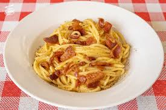
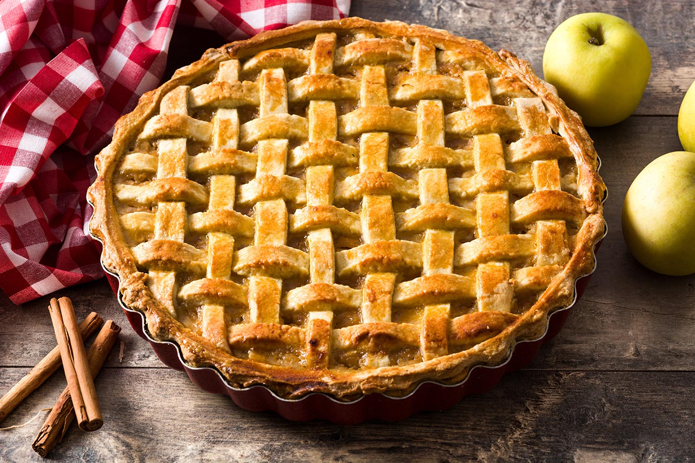
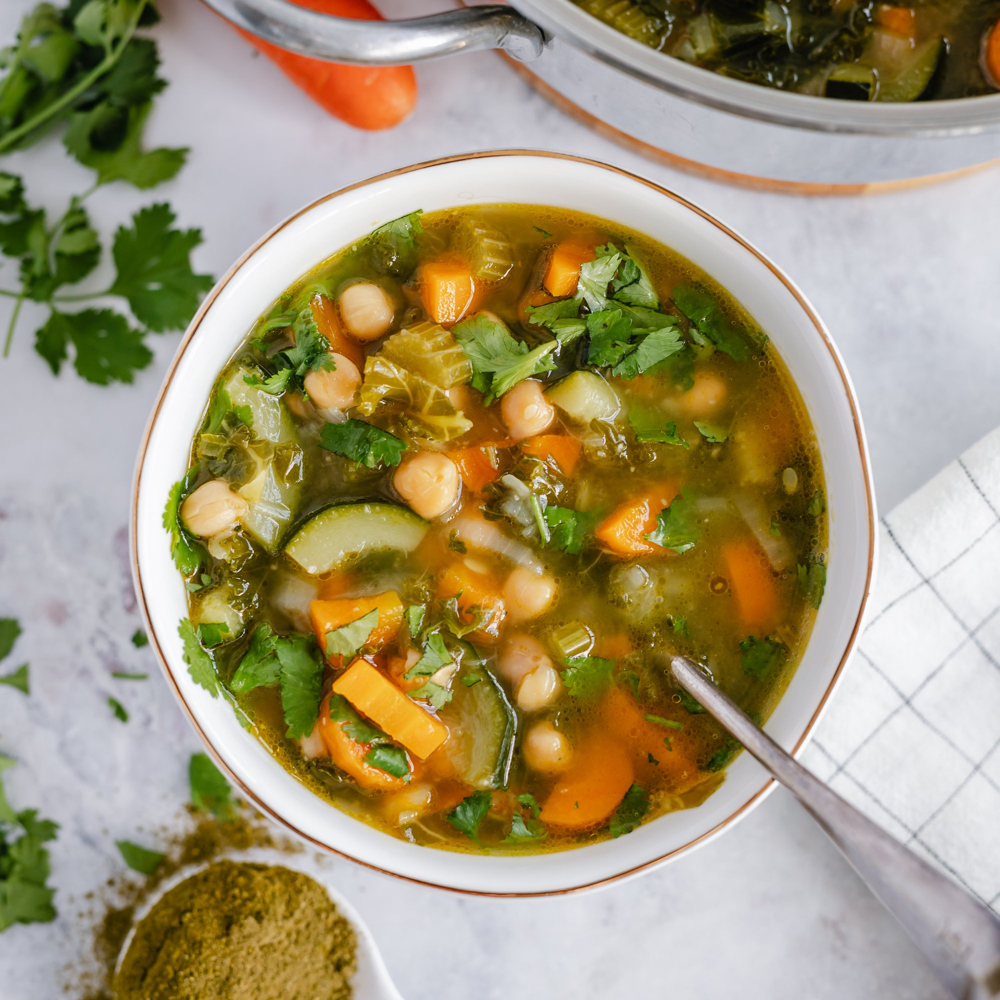

Blog de Cocina Casera
Recetas Fáciles y Deliciosas
Pasta Carbonara

- Cocer la pasta en agua con sal hasta que esté al dente.
- Dorar panceta o tocino en una sartén sin aceite.
- En un bol, batir huevos con queso rallado (parmesano o pecorino).
- Escurrir la pasta y añadirla a la sartén con la panceta.
- Retirar del fuego, añadir la mezcla de huevos y queso, y mezclar bien.
- Servir de inmediato con pimienta negra al gusto.
Tarta de Manzana

- Precalentar el horno a 180°C.
- Extender masa quebrada en un molde para tarta.
- Colocar una capa fina de mermelada o compota sobre la base.
- Pelar y cortar manzanas en láminas finas, y acomodarlas sobre la base.
- Espolvorear con azúcar y canela.
- Hornear durante 35-40 minutos hasta que las manzanas estén doradas.
Sopa de Verduras

- Lavar y picar las verduras (zanahoria, papa, apio, cebolla, etc.).
- Saltear la cebolla y el ajo en una olla con un poco de aceite.
- Añadir el resto de verduras y cubrir con caldo o agua.
- Salpimentar y agregar hierbas al gusto (como laurel o tomillo).
- Cocinar a fuego medio hasta que las verduras estén tiernas.
- Servir caliente, sola o con arroz/pasta pequeña.